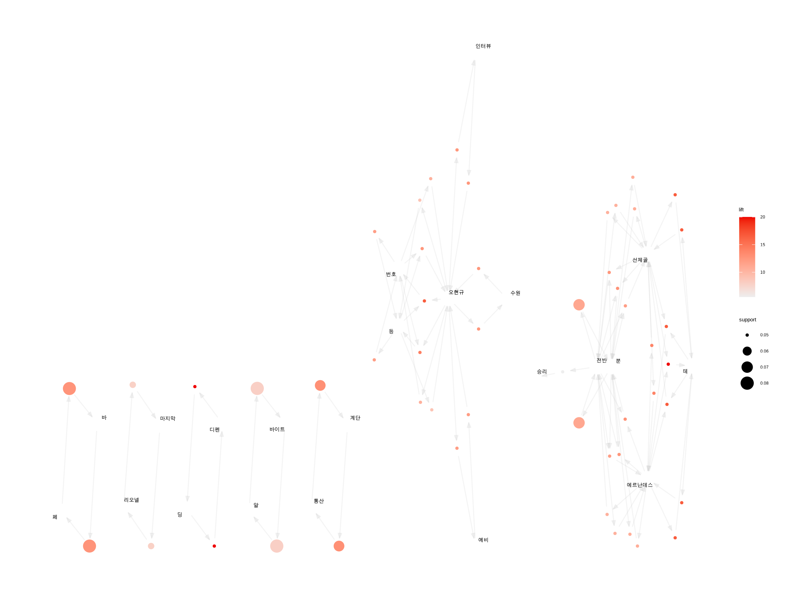
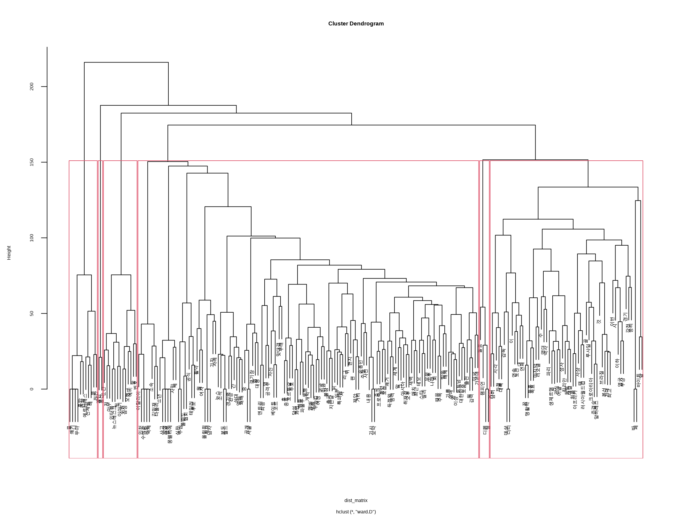
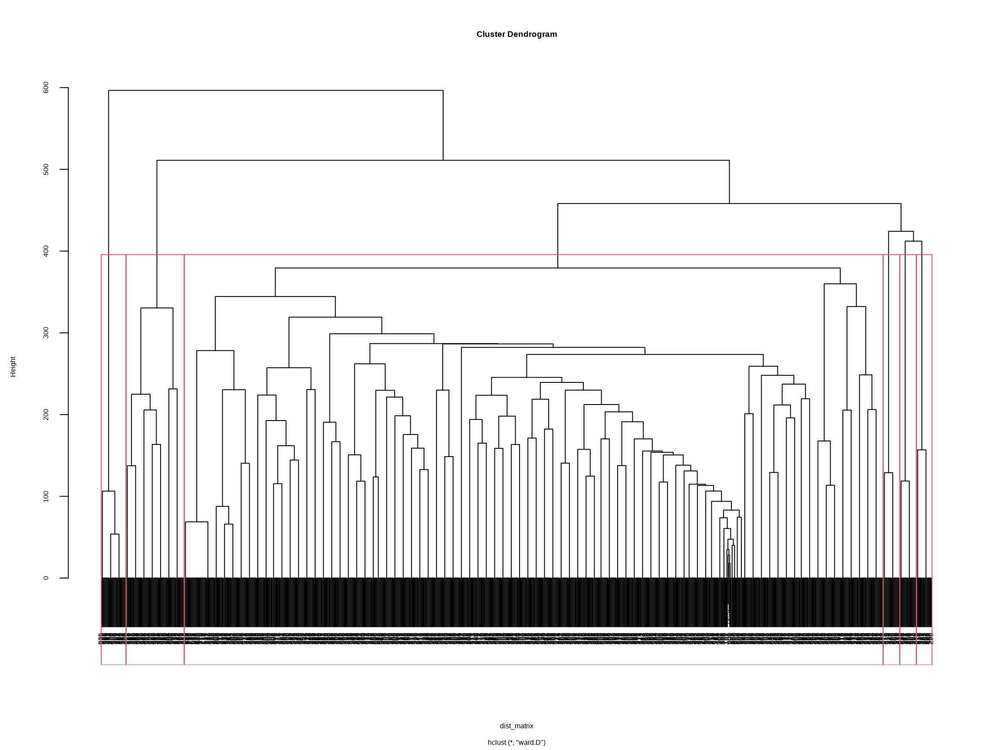
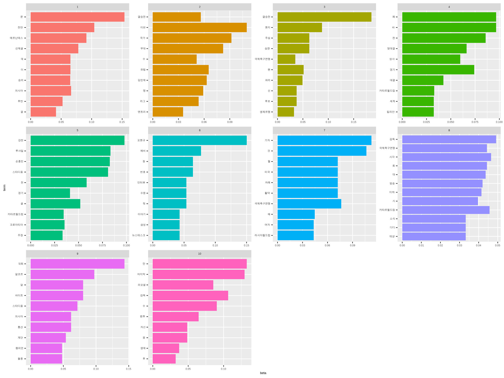
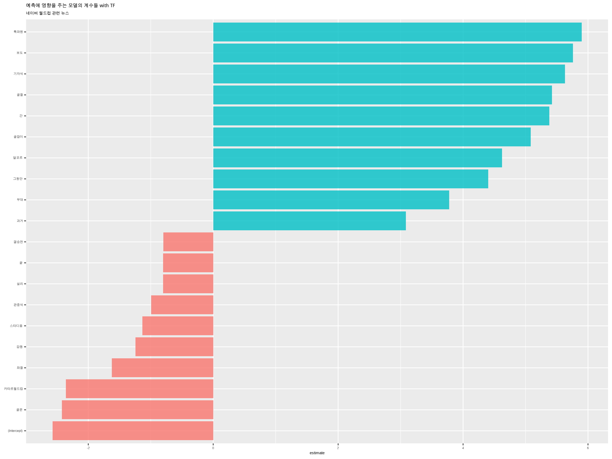

우리는 한 학기 과정의 핵심 내용을 실습을 통해서 다시한번 다지고 나갑니다.
인증키와 키워드 입력 client_id, client_secret는 사용자의 API 인증키를 넣습니다.
library(koscrap)
# Naver 뉴스 API 인증키
client_id <- "Kw6jqiYX_rA3Cud_pjJb"
client_secret <- "p57_rPaA85"
# 검색 키워드
keyword <- "월드컵"
날짜 기준 정렬로 1,000건의 뉴스를 수집합니다.
n <- 1000
# 날짜 정렬 수집
news_worldcup_date <- search_naver(
keyword, client_id = client_id, client_secret = client_secret,
do_done = TRUE, max_record = n
)
유사도 기준 정렬로 1,000건의 뉴스를 수집합니다.
# 유사도 정렬 수집
news_worldcup_sim <- search_naver(
keyword, client_id = client_id, client_secret = client_secret, sort = "sim",
do_done = TRUE, max_record = n
)
각각 2749645건의 데이터가 수집되었습니다. 변수의 개수는 7개입니다.
앞부분 몇 건과 뒷부분 몇 건을 조회해 봅니다.
###간단한 데이터 요약
빈발단어를 워드클라우드로 시각회하는 함수를 만듦니다.
# create UDF
create_wordcloud <- function(data, remove_n = 5, min_freq = 5, background = "white") {
data %>%
filter(nchar(description_text) > 0) %>%
tidytext::unnest_tokens(noun, description_text, bitTA::morpho_mecab, type = "noun") %>%
group_by(noun) %>%
count() %>%
arrange(desc(n)) %>%
ungroup() %>%
filter(n >= min_freq) %>%
filter(row_number() > remove_n) %>%
wordcloud2::wordcloud2(backgroundColor = background,
fontFamily = "NanumSquare")
}
수집한 뉴스에 대해서 워드클라우드를 그려 봅니다.
유사도 정렬 기준으로 수집한 뉴스 중에서 선수와 감독의 이름이 포함된 기사의 건수를 계산하고 각각의 기사에서 해당 선수위 감독의 이름이 몇 번 등장하는지 계산합니다.
persons <- c("벤투", "손흥민", "조규성", "이강인", "호날두", "메시")
persons %>%
purrr::map_int(
function(x) {
news_worldcup_sim %>%
filter(stringr::str_detect(description_text, x)) %>%
tally() %>%
pull()
}
)
[1] 60 62 0 0 4 182persons <- c("벤투", "손흥민", "조규성", "이강인", "호날두", "메시")
persons %>%
purrr::map_dbl(
function(x) {
news_worldcup_sim %>%
filter(stringr::str_detect(description_text, x)) %>%
mutate(n_talk = stringr::str_count(description_text, x)) %>%
summarise(n_avg = mean(n_talk, na.rm = TRUE)) %>%
pull()
}
)
[1] 1.166667 1.516129 NaN NaN 1.000000 1.461538##Document Term Matrix의 이해 ###DTM 생성하기
유사도 정렬 기준 뉴스의 Term Frequency 기반의 DTM과 TF-IDF 기반의 DTM을 생성합니다.
뉴스 데이터는 문서 아이디로 사용할 변수가 없기 때문에 아이디를 만듦니다.
news_worldcup_sim <- news_worldcup_sim %>% mutate(id = row_number())
인명인 고유명사도 함께 추출한 DTM을 만들기 위해서 unnest_noun_ngrams() 함수의 type 인수값에 “noun2”를 사용합니다.
library(tidyverse)
library(bitTA)
library(tidytext)
library(tm)
dtm_tf <- news_worldcup_sim %>%
unnest_noun_ngrams(term, description_text, n = 1, type = "noun2") %>%
filter(!str_detect(term, "[[a-zA-Z]]+")) %>%
count(id, term, sort = TRUE) %>%
cast_dtm(id, term, n)
tm::inspect(dtm_tf)
<<DocumentTermMatrix (documents: 1000, terms: 687)>>
Non-/sparse entries: 20359/666641
Sparsity : 97%
Maximal term length: 6
Weighting : term frequency (tf)
Sample :
Terms
Docs 결승 년 모로코 월드컵 일 축구 카타르 팀 프랑스 한국
125 0 0 0 2 2 0 0 0 0 0
152 0 1 1 3 1 0 2 0 1 1
224 0 0 0 2 2 0 0 0 0 0
251 0 1 1 3 1 0 2 0 1 1
26 0 0 0 2 2 0 0 0 0 0
323 0 0 0 2 2 0 0 0 0 0
350 0 1 1 3 1 0 2 0 1 1
422 0 0 0 2 2 0 0 0 0 0
449 0 1 1 3 1 0 2 0 1 1
53 0 1 1 3 1 0 2 0 1 1#TF-IDF 기반의 DTM
dtm_tfidf <- news_worldcup_sim %>%
unnest_noun_ngrams(term, description_text, n = 1, type = "noun2") %>%
filter(!str_detect(term, "[[a-zA-Z]]+")) %>%
count(id, term, sort = TRUE) %>%
cast_dtm(id, term, n, weighting = tm::weightTfIdf)
tm::inspect(dtm_tfidf)
<<DocumentTermMatrix (documents: 1000, terms: 687)>>
Non-/sparse entries: 20359/666641
Sparsity : 97%
Maximal term length: 6
Weighting : term frequency - inverse document frequency (normalized) (tf-idf)
Sample :
Terms
Docs 결승 년 대표 메시 모로코 아르헨티나 우승 팀 프랑스 한국
300 0 0 0 0 0 0 0 0 0 0
399 0 0 0 0 0 0 0 0 0 0
498 0 0 0 0 0 0 0 0 0 0
597 0 0 0 0 0 0 0 0 0 0
696 0 0 0 0 0 0 0 0 0 0
795 0 0 0 0 0 0 0 0 0 0
894 0 0 0 0 0 0 0 0 0 0
900 0 0 0 0 0 0 0 0 0 0
993 0 0 0 0 0 0 0 0 0 0
999 0 0 0 0 0 0 0 0 0 0각각의 선수와 감독별로 상관계수가 0.4 이상인 단어를 추출해봅니다.
persons <- c("벤투", "손흥민", "조규성", "이강인", "호날두", "메시")
persons %>%
purrr::map(
function(x) tm::findAssocs(dtm_tf, terms = x, corlimit = 0.4)
)
[[1]]
[[1]]$벤투
파울루 개월 부임 생활 직후 마침표 감독 과업 조국 간
0.86 0.82 0.82 0.82 0.82 0.71 0.68 0.57 0.49 0.46
달성
0.46
[[2]]
[[2]]$손흥민
토트넘 얼굴 잉글리시 출장 프리미어리그
0.72 0.50 0.50 0.50 0.50
보호대 부친 손 손웅정 아카데미
0.50 0.50 0.50 0.50 0.50
안면 입성 착용 공동 마스크
0.50 0.50 0.50 0.50 0.50
막판 빅리그 폭풍 득점왕 투호
0.50 0.50 0.50 0.43 0.41
[[3]]
[[3]]$조규성
numeric(0)
[[4]]
[[4]]$이강인
numeric(0)
[[5]]
[[5]]$호날두
결별 드 맨유 맨체스터 몸 무적 상태
1.0 1.0 1.0 1.0 1.0 1.0 1.0
신세 유나이티 유지 잉글랜드 좌절
1.0 1.0 1.0 1.0 0.4
[[6]]
[[6]]$메시
리오넬 아르헨티나 마지막 꿈 생애 목표
0.81 0.57 0.56 0.51 0.44 0.41
기록 맹활약
0.41 0.41 dtm_bin_tf <- news_worldcup_sim %>%
unnest_noun_ngrams(term, description_text, n = 1, type = "noun2") %>%
filter(!str_detect(term, "[[a-zA-Z]]+")) %>%
count(id, term, sort = TRUE) %>%
cast_dtm(id, term, n, weighting = tm::weightBin)
상위 50위인 단어를 불용어로 처리하여 제거합니다.
stop_words <- dtm_bin_tf %>%
apply(2, sum) %>%
sort(decreasing = TRUE) %>%
"["(1:30) %>%
names()
stop_words
[1] "월드컵" "카타르" "일" "프랑스"
[5] "한국" "팀" "축구" "결승"
[9] "시간" "모로코" "우승" "년"
[13] "진출" "대표" "아르헨티나" "준결승전"
[17] "번" "카타르월드컵" "메시" "강"
[21] "스타디움" "선수" "대회" "알코르"
[25] "결승전" "국가" "국제축구연맹" "러시아"
[29] "만" "전" transactions in sparse format with
1000 transactions (rows) and
655 items (columns)summary(trans)
transactions as itemMatrix in sparse format with
1000 rows (elements/itemsets/transactions) and
655 columns (items) and a density of 0.01803664
most frequent items:
승리 경기 바이트 알 이번 (Other)
113 104 100 100 99 11298
element (itemset/transaction) length distribution:
sizes
2 3 4 5 6 7 8 9 10 11 12 13 14 15 16 17 18
20 7 10 10 37 10 100 103 70 111 75 61 147 99 60 23 27
19 22 24
10 10 10
Min. 1st Qu. Median Mean 3rd Qu. Max.
2.00 9.00 12.00 11.81 14.00 24.00
includes extended item information - examples:
labels
1 명
2 홀
3 오현규
includes extended transaction information - examples:
transactionID
1 1
2 26
3 35Apriori
Parameter specification:
confidence minval smax arem aval originalSupport maxtime support
0.6 0.1 1 none FALSE TRUE 5 0.05
minlen maxlen target ext
1 10 rules TRUE
Algorithmic control:
filter tree heap memopt load sort verbose
0.1 TRUE TRUE FALSE TRUE 2 TRUE
Absolute minimum support count: 50
set item appearances ...[0 item(s)] done [0.00s].
set transactions ...[655 item(s), 1000 transaction(s)] done [0.00s].
sorting and recoding items ... [50 item(s)] done [0.00s].
creating transaction tree ... done [0.00s].
checking subsets of size 1 2 3 done [0.00s].
writing ... [51 rule(s)] done [0.00s].
creating S4 object ... done [0.00s].summary(rules)
set of 51 rules
rule length distribution (lhs + rhs):sizes
2 3
39 12
Min. 1st Qu. Median Mean 3rd Qu. Max.
2.000 2.000 2.000 2.235 2.000 3.000
summary of quality measures:
support confidence coverage
Min. :0.05000 Min. :0.6250 Min. :0.05000
1st Qu.:0.05000 1st Qu.:0.7143 1st Qu.:0.05000
Median :0.05000 Median :0.8333 Median :0.06000
Mean :0.05388 Mean :0.8426 Mean :0.06573
3rd Qu.:0.05000 3rd Qu.:1.0000 3rd Qu.:0.07950
Max. :0.08000 Max. :1.0000 Max. :0.10000
lift count
Min. : 5.531 Min. :50.00
1st Qu.:10.550 1st Qu.:50.00
Median :12.500 Median :50.00
Mean :12.503 Mean :53.88
3rd Qu.:13.438 3rd Qu.:50.00
Max. :20.000 Max. :80.00
mining info:
data ntransactions support confidence
trans 1000 0.05 0.6
call
apriori(data = trans, parameter = list(support = 0.05, conf = 0.6, target = "rules"))arules::inspect(rules[1:5])
lhs rhs support confidence coverage lift count
[1] {계단} => {통산} 0.067 1.0000000 0.067 12.98701 67
[2] {통산} => {계단} 0.067 0.8701299 0.077 12.98701 67
[3] {딩} => {디펜} 0.050 1.0000000 0.050 20.00000 50
[4] {디펜} => {딩} 0.050 1.0000000 0.050 20.00000 50
[5] {인터뷰} => {오현규} 0.050 1.0000000 0.050 12.50000 50 library("arulesViz")
plot(rules)
lhs rhs support confidence coverage
[1] {계단} => {통산} 0.067 1 0.067
[2] {딩} => {디펜} 0.050 1 0.050
[3] {디펜} => {딩} 0.050 1 0.050
[4] {인터뷰} => {오현규} 0.050 1 0.050
[5] {테} => {에르난데스} 0.050 1 0.050
[6] {테} => {선제골} 0.050 1 0.050
[7] {수원} => {오현규} 0.050 1 0.050
[8] {바} => {페} 0.079 1 0.079
[9] {페} => {바} 0.079 1 0.079
[10] {에르난데스, 테} => {선제골} 0.050 1 0.050
lift count
[1] 12.98701 67
[2] 20.00000 50
[3] 20.00000 50
[4] 12.50000 50
[5] 16.66667 50
[6] 16.66667 50
[7] 12.50000 50
[8] 12.65823 79
[9] 12.65823 79
[10] 16.66667 50 plot(rules, method = "grouped")
plot(rules, method = "graph")

dim(dtm_bin_tf)
[1] 1000 655compact_bin <- tm::removeSparseTerms(dtm_bin_tf, sparse = 0.985) %>%
as.matrix(compact_bin)
dim(compact_bin)
[1] 1000 217fit <- hclust(dist_matrix, method = "ward.D")
fit
Call:
hclust(d = dist_matrix, method = "ward.D")
Cluster method : ward.D
Distance : euclidean
Number of objects: 217 k개 군집을 나눕니다.
k <- 6
plot(fit)
cluster_list <- rect.hclust(fit, k = k)

k개 클러스터를 구성하는 단어들의 목록을 조회합니다.
[[1]]
분 에르난데스 전반 니 무아 선제골
15 37 148 158 159 160
쐐기 콜 테 후반 랜달
161 162 163 164 201
[[2]]
계단 통산
99 100
[[3]]
오현규 예비 저 수원 등 번호
2 14 46 88 142 144
인터뷰 뉴스데스크 뒷 삼성 이야기 순간
145 151 153 154 156 166
아무
167
[[4]]
명 기자 불참 훈련 현지 김민재 심판
1 3 7 8 9 10 11
주심 포르투갈 뒤 월 취재 손흥민 벤투
12 16 19 22 23 24 25
후 차례 폴란드 방송 매체 활약 득점왕
27 28 29 33 34 35 39
미국 특파원 나라 주장 협회 리그 중
41 44 45 47 48 50 56
출전 맞대결 위 조국 프로축구 베이트 오전
57 58 63 64 65 66 68
나폴리 말 새벽 소속 간 매치 우승컵
69 70 72 73 75 78 79
개막 동행 멤버 보름 원 토트넘 파울루
84 85 86 87 89 90 91
점 제압 차 쾌거 소식 여정 남부
95 96 97 98 101 102 104
몽펠리에 발생 사고 사망 세 소년 때문
105 106 107 108 109 110 115
주목 경기력 뉴스 보도 상대 영광 월드
117 118 119 120 121 122 123
패배 공항 국제 수비수 이탈리아 이후 인천
124 125 126 127 128 129 130
출국 공개 기사 내용 모습 서울 요약
131 132 133 134 135 136 137
테일러 후보 귀국 그 마음 투호 공격
138 139 140 141 143 146 147
회 대한민국 엔트리 최종 종료 무대 일부
149 152 155 157 165 172 173
지난달 팬 달성 남자 여자 올림픽 도움
174 175 176 179 180 181 182
테오 세계 스타 과업 완승 최근 경기장
183 185 186 188 190 191 192
실리 공격수 감격 공식 가운데 거리 대형
193 194 195 196 197 198 199
사진 외 아시아 취재진 자신 코르 이상
200 204 207 208 210 211 212
기록 생애 오후
213 214 217
[[5]]
챔피언 돌풍 디펜 딩
21 80 81 82
[[6]]
강전 이번 유럽 경기 바
4 5 6 13 17
페 감독 수 사상 루사일
18 20 26 30 31
것 브라질 골 크로아티아 준결승
32 36 38 40 42
때 동료 마지막 생제르맹 파리
43 49 51 52 53
영국 좌절 시 시각 역대
54 55 59 60 61
성사 승리 부상 투혼 관심
62 67 71 74 76
대결 남미 바이트 알 연속
77 83 92 93 94
이하 대 도전 연패 이
103 111 112 113 114
역사 처음 데샹 디디 리오넬
116 150 168 169 170
킬리안 이날 기대 목표 최고
171 177 178 184 187
알바레스 러시아월드컵 신 대륙 아프리카
189 202 203 205 206
본선 꿈 맹활약
209 215 216 fit <- hclust(dist_matrix, method = "ward.D")
fit
Call:
hclust(d = dist_matrix, method = "ward.D")
Cluster method : ward.D
Distance : euclidean
Number of objects: 1000 k <- 6
plot(fit)
cluster_list <- rect.hclust(fit, k = k)

군집별 기사 ID를 추출하고 기사의 개수를 조회합니다.
clusters <- k %>%
seq() %>%
purrr::map(
function(x) {
cluster_list[[x]]
}
)
# 기사의 개수
clusters %>%
purrr::map_int(length)
[1] 30 70 841 20 20 1920건 선별 조회 및 워드클라우드 그리기
title_text
1 월드컵 음바페 경기서 패한 절친 하키미와 뜨거운 포옹
2 손흥민 아직도 월드클래스 아냐 월드컵 끝나도 단호한 손흥민父
3 월드컵 승부차기 그 살벌한 카타르시스장환수의 수數포츠
4 축구의 신 메시 마지막 꿈 월드컵 우승 한걸음 남았다
5 플레이 볼 가슴에 세 번째 별을 달 그대 그들의 월드컵 이야기
6 월드컵 음바페와 하키미 진한 포옹으로 이민 2세대 절친대결 마무리
7 포상금 못받은 예비 오현규 월드컵 멤버들 사비 모아 챙겨줬다
8 월드컵 메시 1골 1도움아르헨티나 8년 만에 월드컵 결승 진출
9 월드컵 돌아가는 김민재의 소신발언유럽파 많은 일본이 부럽네요
10 월드컵 골키퍼 등번호는 항상 1번인가요궁즉답
11 축구의 신 메시의 아픈 손 월드컵첫 우승에 성큼
12 월드컵 프랑스 모로코 20 제압아르헨티나와 결승 격돌
13 벤투 대신 퇴장설 사실로컬튜쇼 김진수송민규 월드컵 후일담 전해
14 프랑스 돌풍 모로코 2대 0 제압월드컵 결승 진출
15 월드컵 축구 대표팀 기념관 된 대통령실 로비
16 카타르월드컵 M의 대결 성사메시vs음바페 결승 격돌
17 월드컵 음바페의 프랑스 메시의 아르헨티나와 결승 매치업 성사
18 메시 vs 음바페카타르 월드컵 결승은 신들의 전쟁
19 월드컵 프랑스 결승행 선방쇼 요리스 메시 앞세운 아르헨도 요리할까
20 월드컵 프랑스 모로코 돌풍 잠재웠다메시와 결승서 대격돌# 워드클라우드
news_worldcup_sim %>%
filter(id %in% clusters[[1]]) %>%
unnest_noun_ngrams(term, description_text, n = 1) %>%
filter(!str_detect(term, "[[a-zA-Z]]+|[[0-9]]+")) %>%
count(term, sort = TRUE) %>%
filter(nchar(term) > 1) %>%
filter(row_number() >= 15) %>%
wordcloud2::wordcloud2(fontFamily = "NanumSquare")
기사의 TF 기반의 DTM으로 Topic 분석을 수행합니다.
compact_tf <- tm::removeSparseTerms(dtm_tf, sparse = 0.98) %>%
as.matrix()
dim(compact_tf)
[1] 1000 177Overall Term Frequency 상위 15개 단어를 불용어로 간주하여 제거합니다.
stop_word <- otf[1:20]
stop_word
[1] "월드컵" "카타르" "프랑스" "일" "팀"
[6] "한국" "모로코" "결승" "축구" "년"
[11] "시간" "우승" "아르헨티나" "대표" "메시"
[16] "진출" "준결승전" "강" "선수" "번" [1] 1000 157 명 오현규 기자 결승전 강전
43 140 78 189 94
만 이번 유럽 대회 현지
122 102 59 179 70
김민재 전 심판 주심 경기
46 135 50 50 134
예비 분 포르투갈 바 페
72 118 34 89 89
뒤 국가 감독 챔피언 월
38 143 110 60 60
손흥민 벤투 수 후 차례
94 40 93 44 50
사상 루사일 것 방송 매체
50 80 88 38 40
활약 브라질 에르난데스 골 크로아티아
50 40 70 92 34
미국 준결승 때 러시아 특파원
50 32 31 128 21
저 주장 협회 동료 리그
32 32 22 29 49
마지막 생제르맹 파리 영국 좌절
80 26 52 37 24
중 출전 맞대결 시 시각
29 44 61 80 42
역대 카타르월드컵 국제축구연맹 성사 위
55 193 131 55 36
조국 베이트 스타디움 승리 알코르
26 27 167 113 137
오전 말 부상 새벽 소속
27 24 38 38 46
투혼 간 관심 대결 돌풍
28 29 29 39 60
디펜 딩 남미 개막 멤버
50 50 30 30 30
수원 토트넘 바이트 알 연속
50 30 100 100 60
점 쾌거 계단 통산 소식
30 30 67 77 30
이하 사망 세 소년 대
50 35 30 26 50
도전 연패 이 역사 뉴스
71 40 70 60 30
이탈리아 이후 기사 내용 요약
29 40 21 31 21
후보 그 등 마음 번호
30 30 70 30 60
인터뷰 투호 공격 전반 회
50 30 21 80 40
처음 뉴스데스크 대한민국 뒷 삼성
30 40 30 50 40
엔트리 이야기 최종 니 무아
50 40 40 30 30
선제골 쐐기 콜 테 후반
60 30 30 50 40
데샹 디디 리오넬 킬리안 무대
30 30 84 30 60
팬 달성 여자 도움 세계
41 30 30 24 40
스타 경기장 공격수 공식 가운데
21 40 30 40 25
사진 러시아월드컵 신 아시아 자신
27 30 30 28 40
생애 꿈
23 30 [1] -41873.69 -38543.03 -37632.98 -37383.98 -36929.48 -36374.93
[7] -35716.27 -35545.06 -35318.04which.max(log_ikelihood)
[1] 9[1] 38.62717433 0.09819337 0.09802429 0.10374254 0.10293525
[6] 0.08909183 0.07118032 0.07680259 0.07187277which.min(alpha)
[1] 7prob <- tidytext::tidy(models[[9]], matrix = "beta")
prob
# A tibble: 1,570 × 3
topic term beta
<int> <chr> <dbl>
1 1 명 1.12e-138
2 2 명 5.90e- 2
3 3 명 3.64e- 32
4 4 명 2.27e- 26
5 5 명 3.24e- 77
6 6 명 4.58e- 39
7 7 명 8.53e- 31
8 8 명 3.19e-191
9 9 명 2.96e- 62
10 10 명 2.77e- 43
# … with 1,560 more rowstop_prob <- prob %>%
group_by(topic) %>%
top_n(10, beta) %>%
ungroup() %>%
arrange(topic, -beta)
top_prob
# A tibble: 102 × 3
topic term beta
<int> <chr> <dbl>
1 1 분 0.154
2 1 전반 0.104
3 1 에르난데스 0.0913
4 1 선제골 0.0782
5 1 러시아 0.0665
6 1 테 0.0652
7 1 이 0.0652
8 1 승리 0.0650
9 1 후반 0.0522
10 1 골 0.0415
# … with 92 more rowstop_prob %>%
mutate(term = reorder(term, beta)) %>%
ggplot(aes(x = term, y = beta, fill = factor(topic))) +
geom_col(show.legend = FALSE) +
facet_wrap(~topic, scales = "free") +
coord_flip()

news_gamma <- tidytext::tidy(models[[9]], matrix = "gamma") %>%
mutate(gamma = gamma * 100)
news_gamma
# A tibble: 10,000 × 3
document topic gamma
<chr> <int> <dbl>
1 75 1 1.93
2 174 1 1.93
3 273 1 1.93
4 372 1 1.93
5 471 1 1.93
6 570 1 1.93
7 669 1 1.93
8 768 1 1.93
9 867 1 1.93
10 966 1 1.93
# … with 9,990 more rows#토픽1의 주요 단어
terms(models[[9]], 10)[, 1]
[1] "분" "전반" "에르난데스" "선제골" "러시아"
[6] "테" "이" "승리" "후반" "골" #토픽 1이 95% 이상 포함된 문서 조회
news_gamma %>%
filter(topic == 1) %>%
filter(gamma >= 95) %>%
arrange(desc(gamma))
# A tibble: 30 × 3
document topic gamma
<chr> <int> <dbl>
1 33 1 96.1
2 132 1 96.1
3 231 1 96.1
4 330 1 96.1
5 429 1 96.1
6 529 1 96.1
7 628 1 96.1
8 727 1 96.1
9 826 1 96.1
10 925 1 96.1
# … with 20 more rows[1] "월드컵 축구 대표팀 기념관 된 대통령실 로비"[1] "대통령실이 최근 카타르월드컵에서 16강 진출을 이룬 축구 국가대표팀이 윤석열 대통령에게 선물한... 대통령실은 13일 1층 로비에 대표팀 선수들의 사인이 담긴 대형 사진과 대표팀 주장인 손흥민 선수가 월드컵 16강... "모든 문서는 토픽들의 복합체입니다. 기사 1을 분해하여 토픽의 비율을 조해해 봅니다.
# A tibble: 10 × 3
document topic gamma
<chr> <int> <dbl>
1 1 2 34.7
2 1 5 17.7
3 1 10 17.7
4 1 7 9.17
5 1 3 9.15
6 1 1 9.14
7 1 9 0.613
8 1 4 0.613
9 1 6 0.613
10 1 8 0.613# A tibble: 10 × 3
topic term beta
<int> <chr> <dbl>
1 6 오현규 0.150
2 6 예비 0.0772
3 6 등 0.0644
4 6 번호 0.0644
5 6 수원 0.0536
6 6 인터뷰 0.0536
7 6 뒷 0.0536
8 6 뉴스데스크 0.0429
9 6 삼성 0.0429
10 6 이야기 0.0429news_worldcup_yna <- news_worldcup_sim %>%
mutate(yna_flag = ifelse(stringr::str_detect(originallink, "www.yna.co.kr"), 1, 0))
news_worldcup_yna %>%
count(yna_flag) %>%
mutate(ratio = n /sum(n) * 100)
yna_flag n ratio
1 0 809 80.9
2 1 191 19.1n_yna <- news_worldcup_yna %>%
filter(yna_flag == 1) %>%
tally() %>%
pull()
n_not_yna <- news_worldcup_yna %>%
filter(yna_flag == 0) %>%
tally() %>%
pull()
set.seed(123)
idx_sample <- sample(seq(n_not_yna), size = n_yna)
subset_not_yna <- news_worldcup_yna %>%
filter(yna_flag == 0) %>%
filter(row_number() %in% idx_sample)
subset_yna <- news_worldcup_yna %>%
filter(yna_flag == 1)
news_sample_yna <- bind_rows(subset_not_yna, subset_yna)
news_sample_yna %>%
count(yna_flag)
yna_flag n
1 0 191
2 1 191set.seed(123)
news_split <- initial_split(news_sample_yna, strata = yna_flag)
train <- rsample::training(news_split)
test <- rsample::testing(news_split)
dim(train)
[1] 286 9dim(test)
[1] 96 9 yna_flag n
1 0 143
2 1 143 yna_flag n
1 0 48
2 1 48# 일반명사 단위로 토큰을 생성
token_fun <- bitTA::morpho_mecab
it_train <- itoken_parallel(train$description_text,
tokenizer = token_fun,
ids = train$id,
progressbar = FALSE)
it_test <- itoken_parallel(test$description_text,
tokenizer = token_fun,
ids = test$id,
progressbar = FALSE)
# VOCABULARY 생성
library(doParallel)
nc <- parallel::detectCores()
registerDoParallel(cores = nc)
vocab <- create_vocabulary(it_train)
tail(vocab, n = 10)
Number of docs: 286
0 stopwords: ...
ngram_min = 1; ngram_max = 1
Vocabulary:
term term_count doc_count
1: 아르헨티나 91 76
2: 우승 92 72
3: 축구 92 89
4: 팀 103 83
5: 시간 122 119
6: 결승 123 105
7: 모로코 137 95
8: 프랑스 264 156
9: 카타르 300 212
10: 월드컵 563 280# DOCUMENT TERM MATRIX 생성하기
vectorizer <- vocab_vectorizer(vocab)
dtm_train_tf <- text2vec::create_dtm(it_train, vectorizer)
dim(dtm_train_tf)
[1] 286 511dtm_test_tf <- text2vec::create_dtm(it_test, vectorizer)
dim(dtm_test_tf)
[1] 96 511# VOCABULARY 생성
vocab_bigram <- create_vocabulary(it_train, ngram = c(1L, 2L))
dim(vocab_bigram)
[1] 1639 3# PRUNE VOCABULARY
vocab_bigram <- vocab_bigram %>%
prune_vocabulary(term_count_min = 10,
doc_proportion_max = 0.5)
dim(vocab_bigram)
[1] 167 3# DOCUMENTS TERM MATRIX 생성
vectorizer_bigram <- vocab_vectorizer(vocab_bigram)
dtm_train_bigram <- create_dtm(it_train, vectorizer_bigram)
dim(dtm_train_bigram)
[1] 286 167dtm_test_bigram <- create_dtm(it_test, vectorizer_bigram)
dim(dtm_test_bigram)
[1] 96 167tfidf <- TfIdf$new()
dtm_train_tfidf <- fit_transform(dtm_train_tf, tfidf)
dtm_test_tfidf <- fit_transform(dtm_test_tf, tfidf)
NFOLDS <- 10
classifier_tf <- cv.glmnet(x = dtm_train_tf, y = train$yna_flag,
family = "binomial",
alpha = 1,
parallel = TRUE,
keep = TRUE)
library(broom)
coefs_tf <- classifier_tf$glmnet.fit %>%
tidy() %>%
filter(lambda == classifier_tf$lambda.1se)
coefs_tf
# A tibble: 83 × 5
term step estimate lambda dev.ratio
<chr> <dbl> <dbl> <dbl> <dbl>
1 (Intercept) 74 -2.57e+ 0 0.00686 0.937
2 감동 74 -1.25e+ 0 0.00686 0.937
3 결국 74 -1.00e- 1 0.00686 0.937
4 관중석 74 -9.92e- 1 0.00686 0.937
5 류 74 -1.20e- 2 0.00686 0.937
6 예고 74 -1.15e- 2 0.00686 0.937
7 예지 74 -3.45e-15 0.00686 0.937
8 툽 74 -1.19e- 1 0.00686 0.937
9 포착 74 -1.61e- 2 0.00686 0.937
10 현재 74 -3.27e- 3 0.00686 0.937
# … with 73 more rowscoefs_tf %>%
group_by(estimate > 0) %>%
top_n(10, abs(estimate)) %>%
ungroup() %>%
ggplot(aes(fct_reorder(term, estimate), estimate, fill = estimate > 0)) +
geom_col(alpha = 0.8, show.legend = FALSE) +
coord_flip() +
labs(
x = NULL,
title = "예측에 영향을 주는 모델의 계수들 with TF",
subtitle = "네이버 월드컵 관련 뉴스"
)

# 정오분류행렬
news_tf <- predict(classifier_tf, dtm_test_tf, type = 'class')
cm_tf <- confusionMatrix(factor(test$yna_flag), factor(news_tf), positive = "1")
cm_tf
Confusion Matrix and Statistics
Reference
Prediction 0 1
0 46 2
1 0 48
Accuracy : 0.9792
95% CI : (0.9268, 0.9975)
No Information Rate : 0.5208
P-Value [Acc > NIR] : <2e-16
Kappa : 0.9583
Mcnemar's Test P-Value : 0.4795
Sensitivity : 0.9600
Specificity : 1.0000
Pos Pred Value : 1.0000
Neg Pred Value : 0.9583
Prevalence : 0.5208
Detection Rate : 0.5000
Detection Prevalence : 0.5000
Balanced Accuracy : 0.9800
'Positive' Class : 1
# ROC 커브
library("pROC")
predictions <- predict(classifier_tf, dtm_test_tf, type = 'response')
roc_tf <- pROC::roc(test$yna_flag, predictions)
pROC::auc(roc_tf)
Area under the curve: 1plot(roc_tf)
[1] 0.9832928test[idx, "description_text"]
[1] "카타르 월드컵 준결승전에서 프랑스를 상대로 잘 싸웠지만 아쉽게 졌다며 패배 소식을 보도했다. 현지 영문 일간 월드뉴스는 14일(현지시간) 프랑스전에서 눈부신 경기력을 보여줬지만, 모로코의 영광스러운 월드컵... "[1] 0.001861351test[idx, "description_text"]
[1] "아르헨티나는 14일(한국시각) 카타르 루사일의 루사일스타디움에서 열린 2022 카타르월드컵 4강전에서... 아르헨티나 축구 역사상 여섯 번째 월드컵 결승이다. 독일(8회)에 이어 역대 2위. 메시를 향한 마음으로 똘똘 뭉친... "